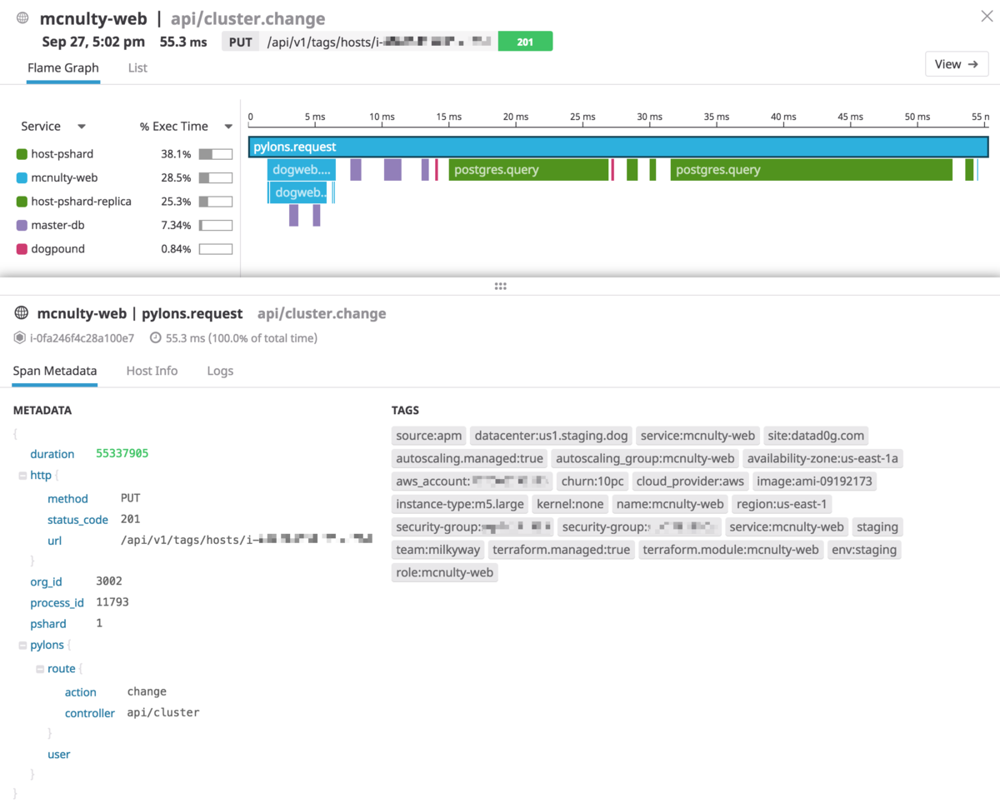

監視¶
なぜ監視をするのか¶
監視はユーザーへサービスを正常に提供できているかを確認するために行います。
なにを監視するのか¶
「サービスを正常に提供できている」の定義はサービスによって異なります。
ユーザーにWebページを見せることができることだったり、バッチが正常に終了することだったりします。
最終的にユーザーに正常にサービスを提供できていることを観測するために行うことに変わりはありません。
クラウド前提であれば個人的にリソースベース（CPU/Memory）より、 SLI/SLOをベース に監視する事が望ましいと考えています。
CPU/Memoryなどのリソースに対してはオートスケールをかけることで枯渇する可能性を減らすことができます。
一般的なWebサービスであればオートスケールによってリソースが枯渇するということは無いでしょう。
SLI/SLOの定義¶
SLOとは¶
Service Level Objectiveの略で、システム提供の可用率を定義します。
例えば「99.95％」のようにです。
可用率は SLIをもとに算出 し、この値が高ければ高いほど当然設計/開発/運用の難易度が上がります。
SLIとは¶
Service Level Indicatorの略で、システムの安定稼働に必要な指標です。
例えば「エラー率」・「リクエストのレイテンシ」・「稼働率」などです。
SLI/SLOベースの監視¶
SLI/SLOベースの監視を始めるためにまずはSLIの定義を行います。
サービスによって性質は異なります。
最適なSLI/SLOをチーム内でディスカッションを行い、決定しましょう。
サービスの性質を知るのに一番かんたんな手法は負荷試験をかけることです。
監視ツールを導入し、負荷試験を行ってどのようなメトリクスが取得できるか試してみると良いでしょう。
| SLA | 週間ダウンタイム | 月間ダウンタイム | 年間ダウンタイム |
|---|---|---|---|
| 99% | 1.68 時間 | 7.2 時間 | 3.65 日 |
| 99.9% | 10.1 分 | 43.2 分 | 8.76 時間 |
| 99.95% | 5 分 | 21.6 分 | 4.38 時間 |
| 99.99% | 1.01 分 | 4.32 分 | 52.56 分 |
| 99.999% | 6 秒 | 25.9 秒 | 5.26 分 |
Tips¶
エラーインジェクション¶
サービスが100％動いているのは理想的ですが、あえてエラーを発生させ、目標となるSLOと近い数値を保つプラクティスがあります。
「100％動くことが前提」になってしまうと、障害時に思いがけない範囲で被害が起きうる可能性があります。
SLOに近い稼働率を維持するようにし、利用者側の期待値を上げすぎず、将来的に大災害になることを防ぎましょう。
例えば、Web APIを提供するときにユーザーがAPIを叩くときにリトライまで考慮してくれていることは稀で、本質的にはこういったリトライなど対障害のための仕組みをユーザーに導入してもらえるようになるとベストです。
SLAの検討¶
Service Level Agreement は設定した数値（e.g. 99.95％）を維持できなかった際、なんらかの罰則が発生するサービスとクライアントの契約です。
罰則は基本的に返金という形です。
クラウド事業者や一部SaaS事業者でSLAを設定しているのは見受けられますが、一般的なWebサービスにSLAは過剰でしょう。
個人的に、社外へのユーザーよりむしろ社内のユーザーへサービスを提供する際にSLAが必要になってくると考えます。
それはマイクロサービス化というより、"社内基盤システム"のような会員や課金などを司るサービスです。
社内基盤という立場はなあなあになってしまうケースを多く見受けられ、最終的に「社外のSaaSを使ったほうが良い」という評価を受けがちです。
そのようなケースを回避するために社内基盤では利用料を取り、SLAを定義するべきだと私は考えます。
3 Pillars of Observability¶
まず監視をはじめるために監視対象からのデータを取得する必要があります。
データには様々なものがありますが、可観測性の3つの柱（3 Pillars of Observability）を意識すると良いでしょう。
ログ ・ メトリクス ・ トレース の3つの柱です。
それぞれ見ていきましょう。
1. ログ¶
システムに発生したなんらかのイベントです。
例えば起動/終了時だったり、処理結果だったり、エラーメッセージだったり、なんらかのイベントの履歴です。
フォーマット¶
ログを出力する際に無邪気に printf などでテキストだけ出力することはありません。
表示したいメッセージの他に、ログの重要度（LEVEL）・httpのヘッダー情報・タイムスタンプ・バージョン情報などをログに含める必要があります。
例えば以下はHTTPリクエストを受けるサーバーの例です（nginx）
GET /index.html HTTP/1.1
↓
172.18.0.1 - - [30/Mar/2019:18:53:31 +0000] "GET /index.html HTTP/1.1" 200 612 "-""Mozilla/5.0 (Macintosh; Intel Mac OS X 10_14_3) AppleWebKit/537.36 (KHTML, like Gecko) Chrome/73.0.3683.86 Safari/537.36" "-"
幸いlog4jやsyslogなど、代表的なフォーマットが既に存在して広く使用されています。
まずはこれら代表的なフォーマットを理解することが第一歩です。
次に、使用するフレームワークのフォーマットを確認しましょう。
基本的にフレームワークのデフォルトのフォーマットに乗っ取るのが良いでしょう。
オレオレフォーマットの場合メンバー間の共有や、欲しい情報が欠損していたりなど、おとなしく先人の知恵に乗っ取りましょう。
また、ログは構造化されていたり構造化されていなかったりしますが、基本的に 「1つのイベントは1行のJSON」 にするのが良いででしょう。
構造化されていないログは扱いづらく、複数行ログが現れた日には地獄を見ます。
後々分析しやすいよう構造化すると良いでしょう。
最終的にログをみる場所で見やすければよいのです。
出力¶
システムが吐き出したログをどこへ格納するか考える必要があります。
一般的に「ファイルに書き込むパターン」と「標準出力へ書き込むパターン」の2つのパターンがあります。
トラディショナルなアプリケーションであればファイルに書き込むパターンが多いですが、コンテナに最適化されているアプリケーションの場合であれば標準出力へ書き込むことを検討してください。
モダンなアプリケーションの設計（例えば12factor app）の考え方的に「ステートレス」というものがあり、ファイルへの書き込みはステートフルな状態になってしまいます。
ログは標準出力へ書き込み、FluentdやDatadogなどのミドルウェアで拾いましょう。
FargateやGAEのようなサービスを使うのであれば、標準出力が自動的にモニタリングサービスへ転送されます。
もしファイルへ書き込むことになってしまった場合はログのローテションを忘れずに行いましょう。
他にも出力するログが大きすぎるとパフォーマンスに影響する点にも注意しましょう。
閲覧¶
AWSであればCloudWatch Logs、GCPであればStackDriverを用いることが一般的でしょう。
他にもELKスタックのKibanaやSplunkやDatadogなども使えます。
ログ（や監視情報）の閲覧に困ったらDatadogは非常におすすめです。 Datadogの良いところはAPMとログとメトリクスがシームレスに行き来できることです。
どのツールを使用するにせよ、一箇所に集めて複数サーバーにsshしなくていいようにすることが大事です。
また、この際注意しなければならないこととしてマスクしなければならない情報が存在することです。
例えばパスワードやクレジットカードの情報です。こういった情報はマスクして扱うようにしましょう。
保管¶
一般的にログの保管は高価です。
だいたい7日を超えたログは安価なストレージへアーカイブして削除（ローテート）すると良いでしょう。
AWSであればS3へアーカイブすると良いでしょう。S3であればAthenaを使用して直接閲覧することができます。
各種サービスの利用料を試算してみましょう。
例えば 200文字 のログ（先程例に上げたnginxのログ）が 200万行 で 計400GB あるとしましょう。
CloudWatch Logs¶
$316.2/m
CloudWatch Logs は「取り込み」と「保存」の2種類の課金が存在します。
取り込みは1GBあたり\$0.76かかり、保存は1GBあたり\$0.033かかります。
ローテション期間はユーザーが任意の期間で設定でき、永久保存しておくことも可能です。そのため、ローテション期間を設定し忘れると余計な費用がかかってしまうことがあります。
Stack Driver Logging¶
$200/m
$0.5/GiBです。
無料枠で最初の50GiB分は無料になります（今回の計算には入れていません）。
ローテション期間は30日です。
Pricing | Stackdriver Documentation | Google Cloud Quotas and limits | Stackdriver Logging | Google Cloud
Datadog¶
$2.54/m
100万イベント（100万行）を格納する毎に$1.27かかります。
デフォルトだと7日毎にローテーションされ、追加で課金することで30日まで延命することも可能です。
また、アーカイブの機能を持っており、設定を行うことで一定期間の過ぎたログをS3へ自動で転送してくれます。
その他¶
SaaSとしてはPapertrailやSplunk、OSSとしてはELKやgrafana/lokiなどなど、それぞれ比較検討してみると良いでしょう。
2. メトリクス¶
CPU, Memory, Network, ディスクなど、特定の時間の値です。
例えばメモリの使用量やレスポンスタイムやコネクション数などです。
これらの値は最初から取得されている事が多いでしょう。特にクラウドであればほとんどのサービスが最初から自動的に取得されます。
サービスの性質に合わせてメトリクスを取得しましょう。
ログと比較して比較的安価に取得/保管が可能なので、自動化をして積極的に取得しておくと後々助かると筆者は考えます。
3. トレース¶
トレースは分散トレースもしくはAPM、あるいはその両方を指すことを見受けられます。
ここでは両方を指して「トレース」と呼びます。
それぞれコード上での処理をトレースするためのプラクティスです。
APM¶
APM（Application Performance Monitoring）を使用することでコード実行時のトランザクションを可視化してくれます。
これに関してはみる方がはやいでしょう。

画像はあるHTTPリクエストの1リクエストを可視化したものです。
どんなメソッド・クエリ・APIが呼び出されているのかが一目瞭然です。
分散トレース¶
昨今のアプリケーションはマイクロサービス化されていることが多いです。
マイクロサービスとは、例えばフロントエンドとバックエンドでサービスが別れていたり、会員APIや課金APIのような共通のサービスがあったり、「複数のサービスを協調させて1つのサービスとして動かす」ことです。
マイクロサービス化する際に複数のサービスが協調して動いていることを確認するため、サービスを横断してリクエストの処理を追う必要があります。
このプラクティス（とこれを実現するための手法）を分散トレースと呼びます。
代表的なプロダクトにJaeger・OpenTracing・Zipkinがあります。
これはリクエストの処理を追うだけでなく、将来的に複雑化していくマイクロサービスの依存関係を把握するためにも使用することができます。
マイクロサービス化の初期段階から設計/導入しておくと将来的に楽できるでしょう。
その他¶
ログ・メトリクス・トレース、3つの柱が重要ですが、これら以外にも監視を行う際に考えることはあります。
死活監視¶
サービスが生きているか・死んでいるかを確認する監視です。
一定期間毎に「特定のプロセスが動いているか」・「特定のエンドポイントからレスポンスが返ってくるか」などの監視です。
単純にHTTPリクエストを送って確認するだけでも良いですが、E2Eテストを実行するなどするとより確実でしょう。
アラート¶
サービスが異常な状態になった際に通知を上げる必要があります。
異常な状態の定義についてはアラートを設定する前にチームと管理者でディスカッションしてSLI/SLOを設定するところからはじめましょう。
アラートは無邪気にかけるのではなく、レベルを分けると良いでしょう。
例えば「warningとcriticalの2つに分ける」のようにです。
エンジニアが対応可能かつ即座に修正が必要なものはcriticalに設定し、確実にエンジニアに通知が行くようにします。
そういったエンジニアが対応可能ではないイベントはwarningに設定し、ベストエフォートで対応すると良いでしょう。
通知が飛びすぎるとアラートがオオカミ少年になり、エンジニアが見なくなるリスクがあります。また、何度もいいますが、「その障害はエンジニアが対応可能か」が重要です。
極端な例でいうとDDoSのようなエンジニアに対応することが困難な状況の場合は通知を送信しても意味がありません。
また、クラウドを使用している場合はCPUやMemoryのようなリソースにアラートをかけることもあまり良いプラクティスではないです。リソース起因で障害が起きないようにするために負荷試験を十分に行ってキャパシティプランニングを行い、その上でオートスケールをかけるようにしましょう。
アラートをcriticalに設定する際は慎重に行うだけでなく、Playbookの作成も同時に行いましょう。
Playbookとは障害対応の手順書のことです。
アラートをかける場合は障害の予測を行って設定を行い、その対応手順も同時に作成しましょう。もしかしたらその障害は自動化できるかもしれません。
余談になりますが、criticalなアラートが発砲され障害対応を行った際にはポストモーテムの作成を行いましょう。
ポストモーテムとは発生した障害に対するふりかえりです。障害報告書のようなトラディショナルなものではなく、エンジニアがエンジニアのためにインシデントから得た学びを共有するためのドキュメントです。
ポストモーテムの文化は会社としての学びの機会でポジティブなのです。
どのようなフォーマットにするかはメンバーとディスカッションして決めると良いですが、参考までにポストモーテムにのせると良いであろうエッセンスをSRE本から引用します。
- 何が起きたのか
- 対応の有効性
- 次の時に変えるべき行動は何か
- 特定のインシデントの再発を防止するために行うことは何か
ダッシュボード¶
メトリクスを一覧するために作成します。
ダッシュボードの作成はSLIをベースに構築しましょう。
また、闇雲に1つのダッシュボードにメトリクスを詰め込むのはアンチパターンです。
SLIを監視するためのメインのダッシュボードと、特定のリソースを深堀りするためのサブダッシュボード（ALB用やRDS用など）のようにわけるとよいでしょう。
ダッシュボードに表示するものとしてはSLIに沿ったものメインに、以下の4大シグナルも参考にしてみると良いでしょう。
最後に、ダッシュボードはチームが定常的に見れることが望ましく、作成したダッシュボードを表示し続けるためのモニタリング用のディスプレイを用意する価値はあるでしょう。
ツールの選定¶
筆者としては3Pillarsに対応できるツールであればどれを採用しても問題ないと思います。
強いて言うなら3Pillarsを満たしているかつ多機能で安価なSaaSの Datadog がオススメです。
小規模なサービスなら約$50/mで活用することができます。これは学生アルバイトエンジニアの1日分の給料より安いです。稟議に通らないわけがないです。
選定は機能面での選定はもちろんですが、SaaSであれば資本力があるか、OSSであれば更新がされているか、将来性を確認しましょう。
また、「自分ができる」より「チームができる」ことを前提に置くと良いでしょう。
モニタリングツールは障害時の命綱と言っても過言ではないです。
「ログはあのサービスに」「メトリクスはあのサービスに」「APMも実はあのサービスで」、、、そしてそれぞれの操作を覚えて、、、複数の手段を用意する際はチームで見合ったコストになるのかはちゃんと考慮しましょう。
幸い、監視ツールは、基本的に、サービスに直接影響を及ぼすものではありません。そのため複数のツールを選定しやすくあります。
一番チームにあったツールを採用しましょう。
監視の実践¶
ここまでが前提知識の学習でした。
ここからは監視を実戦投入するためにどういった順序で取り組んでいけばよいのかについてです。
1. SLI/SLOの定義¶
何度もいいますが、SLI/SLOを定義しましょう。 これらはサービスを運用するにあたって指標となる値です。チームだけで定義するのではなく、管理者（プロダクトオーナー）との合意も得ましょう。
SLIを決める観点として 「ユーザーがを利用できているか」 を意識することです。
サービスの性質によりますが、一般的なWebサービスであれば「一定時間以内のレスポンスタイム」「リクエストのエラーレート」がよくあげられます。これがバッチ処理になってくるとまたSLIが変わってきます。
SLIに悩んだら4大シグナル（「レイテンシ」「トラフィック」「エラー」「サチュレーション」）を参考にすると良いです。
決まらない場合は 「リクエスト成功率」・「レスポンスタイム」をSLI とし、 SLOを99.5% （月間3.6時間のダウンを許容）にすると一般的なサービスなら良いと思います。
SLOを定義することはエンジニアのために行うものだと筆者は思っています。
一般的になにもしないとビズサイドから「SLAは100％」と意味不明なWordが飛んできてもおかしくないです。ビジネス層へシステムは100%ではないことを説明し、その合意をするタイミングを含めてSLOの定義を行ってしまいましょう。
SLOの定義はエンジニアが管理者からの定量的な評価を受けることができるようになり、SLOを取り入れたことによりエラーバジェットという考え方で生産的な挑戦をすることができるようになります。
なにより、見えないものと戦わなくて良くなるということは気分が良いです。
2. データの取得¶
サービスを運用するために必要なデータを取得します。
このタイミングで監視ソフトウェアの選定を行うと良いでしょう。
ツールの選定後、監視エージェントの配置やライブラリのインストールを行います。
3. アラートの設定¶
正常ではないパターンだけアラートをかけます。
アラートは、crit/warnでアラートのレベルを分けて設定し、Playbookの用意をしましょう。
4. ダッシュボードの作成¶
SLIをもととし、設定したSLIを一覧できるようにしましょう。
ダッシュボード1つにすべての情報を詰め込む必要はありません。1つのダッシュボードへ全ての情報をまとめるより、粒度によって複数サブダッシュボードを作っておくと良いでしょう。
例えばサービス全体を俯瞰して見れるメインダッシュボードを用意し、それに紐づくダッシュボードをいくつかつくるとします。
メインダッシュボードではSLIで定義しているメトリクスを載せましょう。例えばエラーレートやレスポンスタイムなどです。このダッシュボードは日常的にチーム全員が見えるディスプレイに表示しておくと良いでしょう。
サブダッシュボードは使っているコンポーネント単位で作ります。RDS用、ELB用、Redis用、特定のPod用などなど、障害調査時に活用できるように作ります。
継続的な監視¶
負荷の計測¶
サービスはサービスの成長（ユーザー数の増加など）と共に負荷が上がっていきます。
こういった負荷に対するキャパシティプランニングのためにもダッシュボードを日常的に確認しておきましょう。
パフォーマンスチューニング¶
監視をしているとパフォーマンスが悪い箇所を見つけられることができます。
例えばCDNのキャッシュが効いてなかったり、MySQLのインデックスが張られていなかったりなどです。
障害訓練¶
一定期間毎にステージング環境など本番に近い環境で障害を意図的に起こし、それに対して対応をする障害訓練をするとよいでしょう。
障害はポストモーテムを参考に過去に起きた障害を再現してもいいですし、アラート設定時に作成したPlaybookを使うのでも良いです。
これを行うことでサービスの特性を知ることができ、新旧メンバーともに知見の標準化をすることが期待できます。また、単純に障害への対応能力を上げることもできるでしょう。
まとめ¶
- 監視は運用する上で欠かせず、先人が様々なデザインを生み出しています。先人の知恵から学びましょう。
- 個人的にDatadogがオススメです。
参考¶
- O'Reilly Japan - 入門 監視
- Google Cloud Platform Japan 公式ブログ: SLO、SLI、SLA について考える : CRE が現場で学んだこと
- SLI/SLO/SLAについて
- Metric and label naming | Prometheus
- OSS監視ツールPrometheusの提唱するベストプラクティス
- モニタリングのベストプラクティス | Datadog
- Google Cloud Platform Japan 公式ブログ: 優れた SLO を策定するには : CRE が現場で学んだこと
- 3 Pillars of Observability - cengizhan.com
- Three Pillars of Observability: Do You Have All of Them? | Scalyr
- PagerDuty Incident Response Documentation
- PagerDutyのインシデント対応についてのドキュメント
- 「入門 監視」読書メモ · GitHub
- デジタルカスタマーエクスペリエンスのモニタリング（DCX）に関するベストプラクティス | New Relic Resource
- Amazon CloudFront サービスレベルアグリーメント（SLA） | アマゾン ウェブ サービス（AWS 日本語）
- 【読書メモ】モニタリングでの4大シグナル/USEメソッド/REDメソッド - febc技術メモ